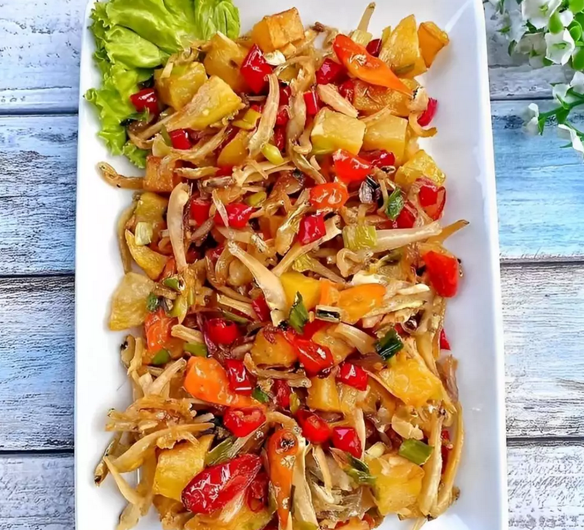
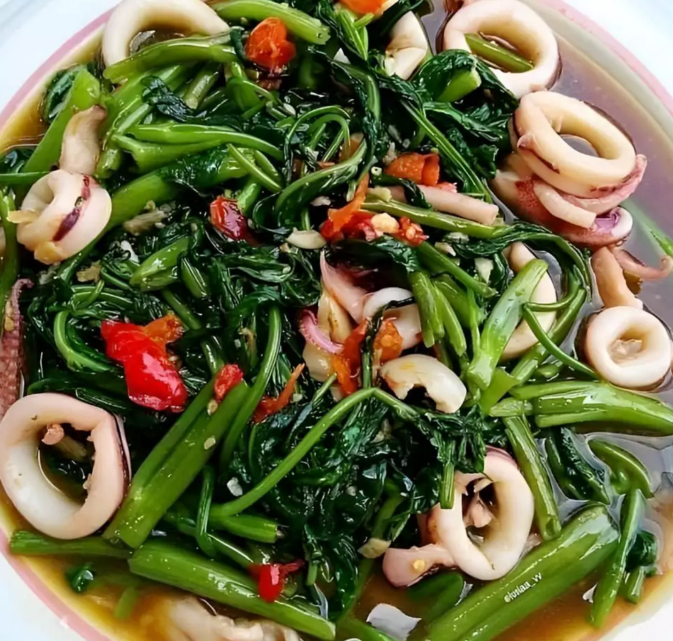

Resep Makanan
Oseng Teri Kentang

Bahan
- 3 buah kentang
- 150 gr ikan teri asin
- Garam, gula, dan kaldu bubuk secukupnya
Bumbu
- 7 siung bawang merah
- 3 siung bawang putih
- 5 buah cabai merah
- 8 buah cabai rawit merah
- 8 buah cabai rawit merah
Tahapan
- Kupas kentang, lalu potong dadu dan goreng hingga matang. Sisihkan.
- kemudian bilas ikan teri lalu goreng hingga matang. Sisihkan.
- Panaskan sedikit minyak lalu tumis bawang merah dan bawang putih hingga harum. Kemudian masukkan cabai dan tumis hingga harum.
- Jangan lupa koreksi rasa, jika sudah pas angkat dan siap disajikan.
Cah kangkung cumi

Bahan
- 1 ikat kangkung
- 1 ekor cumi
- 1/2 sdm fibercreme
Bumbu Uleg Kasar
- 4 siung bawang putih
- 1 butir kemiri
- 10 buah cabai rawit
Bumbu Lengkap
- Saus tiram
- Penyedap jamur
- Garam
Cara Membuat
- Siangi kangkung lalu cuci bersih dan tiriskan.
- Bersihkan cumi lalu potong cincin.
- Panaskan minyak lalu goreng cumi sampai matang, angkat sisihkan.
- Tumis bumbu uleg sampai wangi lalu masukkan kangkung dan cumi yang sudah digoreng tadi.
- Besarkan api lalu tumis cepat, masukkan saus tiram, garam dan penyedap jamur secukupnya. Aduk rata.
- Aduk rata fibercreme dengan sedikit air hangat lalu tuang ke dalam tumisan.
- Jangan lupa koreksi rasa, bila sudah pas angkat dan siap disajikan.